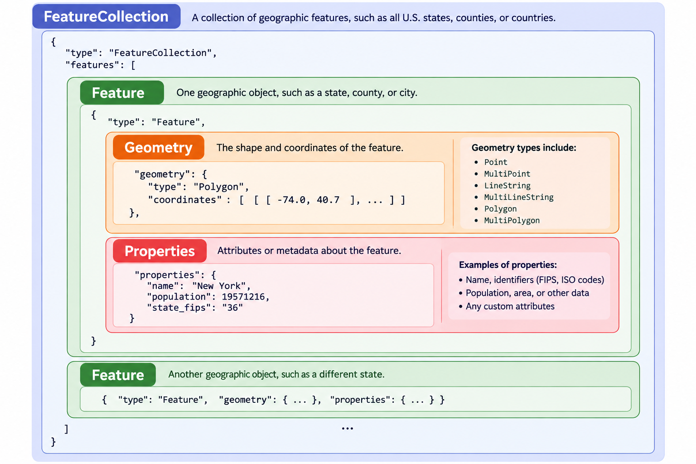
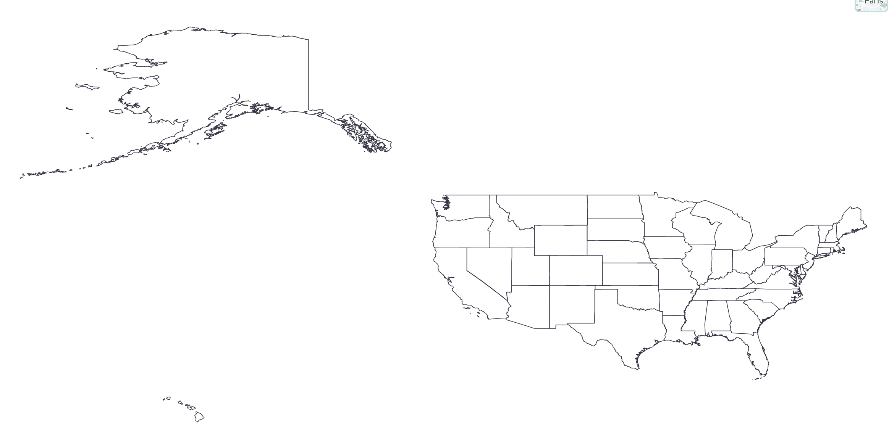
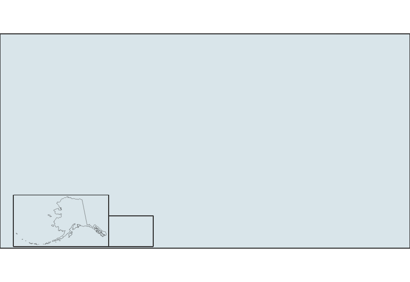
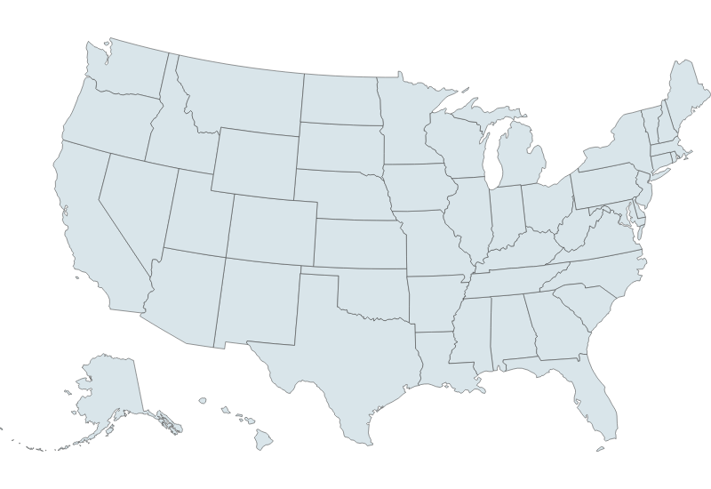

Week 8 Lab: Plotting and Troubleshooting GeoJSON with D3.js
CS-GY 6313 - Information Visualization
New York University
2026-10-29
Week 8 Lab Overview
| User Interface | Graphics Library | Notebook(s) |
|---|---|---|
| observablehq.com | D3 | Week 8 Lab Notebook |
Today’s Lab Activities
Today we will be a exploring the following topics:
- Understanding GeoJSON - What is it?
- GeoJSON’s Coordinate System
- GeoJSON Geometry & Properties
- Where to Find Geodata?
- ShapeFiles to GeoJSON
- D3.js and Maps
- Troubleshooting GeoJSON and D3.js
- Practice: Creating Maps of Countries
What is GeoJSON?
Definition
GeoJSON is an open standard format designed for representing simple geographical features, along with their non-spatial attributes. It is based on the JSON format. - Wikipedia
GeoJSON Hierarchy

Example GeoJSON
geometrydetermines where the region is and what its shape is.propertiesprovides information about that region.
GeoJSON Coordinate System
GeoJSON follows a geographic coordinate system where the positions are usually stored as:
| Coordinate | Valid range | Meaning |
|---|---|---|
| Longitude | −180° to +180° | West to East |
| Latitude | −90° to +90° | South to North |
GeoJSON follows a specific standard of long/lat coordinates called the World Geodetic System (WGS) - specifically, WGS 84 (or otherwise called EPSG:4326). You should remember that long/lat coordinates are not pixel positions; they are degrees relative to the Prime Meridian and Equator, respectively.
GeoJSON Geometry
There are six (6) fundamental geometry types, plus GeometryCollection:
| Geometry Type | Description | Format |
|---|---|---|
Point |
A single coordinate point, such as a building or pin on a map | [lon, lat] |
MultiPoint |
Multiple independent points | [[lon, lat], ...] |
LineString |
A connected path, like a river or road | [[lon, lat], ...] |
MultiLineString |
Several independent lines | [[[lon, lat], ...], ...] |
Polygon |
One polygonal region, potentially with holes | [[[lon, lat], ...], ...] |
MultiPolygon |
Multiple polygonal groups, combined into a single entity | [[[[lon, lat], ...], ...], ...] |
All polygons are constructed from one or more rings. Each ring must begin and end at the same coordinate. Consider this example, which actually has two (2) rings: an exterior ring, and an interior hole.
GeoJSON requires that Exterior rings should be counterclockwise and that Interior holes should be clockwise, using the Right-Hand Rule (RHR).
GeoJSON Properties
Unlike geometry, properties usually contain metadata about the geometry. For example:
These are properties of the state of Alabama. This particular instance gives us a lot of info, such as which country the region is a part of, what kind of region it is to begin with, and other identifiers.
- Properties make it easier to link datasets together, as you can link identifiers across datasets.
- Properties can also hold information (e.g. population counts for a region).
Where can we Find Geodata?
Geodata is usually a combination of different data sources:
- Geographic boundary data (GeoJSON, TopoJSON, etc.) is usually converted from “ShapeFiles” (
.shp). - Geographic data points (e.g. points on a map) can also be encoded as GeoJSON data.
- Data trends and time series data are usually in the typical data format (e.g.
.csv, Excel) and need to be mapped to GeoJSON features.
You can find existing GeoJSON files in the wild, such as in Vega-Lite’s pre-existing US-Atlas GeoJSON or . However, you don’t really have much control over the fidelity and properties of the GeoJSON itself.
Step 1: Find an appropriate ShapeFile
- US Census Cartographic Boundaries Data: Geographic data of U.S. regions based on different features such as zip code divisions, census data, etc. Optimal for U.S.-focused boundary data.
- https://gadm.org/data.html: An open-source solution that’s freely accessible for academic and non-commercial usage. Recommended to download by country.
- https://www.naturalearthdata.com/: A sizeable repository of ShapeFiles for world regions.
Step 2: Simplify and convert from ShapeFile to GeoJSON
Step 3: Load, understand, and troubleshoot your GeoJSON
Let’s try Steps 1 and 2
Let’s download the .shp data from the US Census Cartographic Boundary Files Datasets, then use MapShaper to convert it into GeoJSON

Step 3: Rendering Geomaps in D3.js
Rendering geoplots in D3.js is conceptually very similar to what we did with other non-scatter plot types such as Pie Charts and Histograms. Fundamentally, we need to:
- Determine what kind of projection we want to project our points onto.
- Create a path generator that maps raw points to our projection.
- Render paths using our path generator.
// Determine our plot's dimensions
const usa_width = 800;
const usa_height = 550;
// Define projection using Albers USA, our plot's dimensions, and `us_state_5m` we imported
const usa_projection = d3.geoAlbersUsa()
.fitSize([usa_width, usa_height], us_state_5m);
// Create geographic path generator
const usa_path = d3.geoPath(usa_projection);Projection Types in D3
Azumithal Projections (documentation)
d3.geoAzimuthalEqualArea()d3.geoAzimuthalEquidistant()d3.geoOrthographic()
Conic Projections (documentation)
d3.geoConicConformal()d3.geoConicEqualArea()d3.geoAlbers()- US-centric!
Cylindrical Projections )(documentation)
d3.geoMercator()d3.geoEquirectangular()d3.geoEqualEarth()
Step 3: Rendering Geomaps in D3.js
If we render our SVG as a series of paths:
// Create SVG
const usa_svg = d3.create("svg")
.attr("width", usa_width)
.attr("height", usa_height);
// Render each state as a path, with a fill, stroke, and stroke-width
usa_svg.selectAll("path")
.data(us_state_5m.features)
.enter()
.append("path")
.attr("d", usa_path)
.attr("fill", "#D9E5EA")
.attr("stroke", "#333")
.attr("stroke-width", 0.5);
… Uh oh.
Troubleshooting GeoJSON and D3.js
This is a common problem with D3.js and GeoJSON. Namely, there is a discrepancy between GeoJSON’s Right-Hand-Rule (RHR) convention and D3.js’s spherical geometry implementation. To prevent issues like these, we need to consider:
- Are there any
nullgeometries in our data? - Are the
PolygonandMultiPolygongeometries in our dataset the correct winding order?
The winding direction issue is not always a mandatory fix - it really depends on where you are getting the data from. It is your responsibility to check if the GeoJSON data renders properly, and if not then fix the two likely problems above.

Practice: Produce 3 Graphs (15mins)
Attempt to generate the geodata of one other country other than the USA. You can use any of the references mentioned above for getting your ShapeFiles, converting them into GeoJSON, and troubleshooting their issues upon importing them.
- Try playing around with different geometries, ouside of just country borders.
- Try different projection types provided by D3
When you are done, upload a screenshot of your plot to this Google Drive folder with your name, NetID, and country in the filename.
Group Projects: Proposal Feedback & Reminders
- Projects range in topics from sound profiles to railway maps to health problems - good spread.
- Visualization implementations must be in D3. Data processing is up to you (e.g. Python).
- Strongly recommend either Framework or Observable Notebooks.
| Milestone | Due Date | Details |
|---|---|---|
| Data Analysis & Sketches | Nov 3 | Data tables and visualization sketches |
| First Draft | Nov 17 | Initial D3 implementations |
| Second Draft | Dec 1 | Refined narrative and polished visualizations |
| Final Submission | Dec 8 | Complete project with presentation |
Final Reminders & Checks
- Data Analysis & Sketches - Due Nov 3 @ 11:59pm - Data tables and visualization sketches.
- Mini-Project #1: Due next week (Oct. 29 @ 11:59pm)
- Questions?
- Office Hours!
- Discord!
- Email!